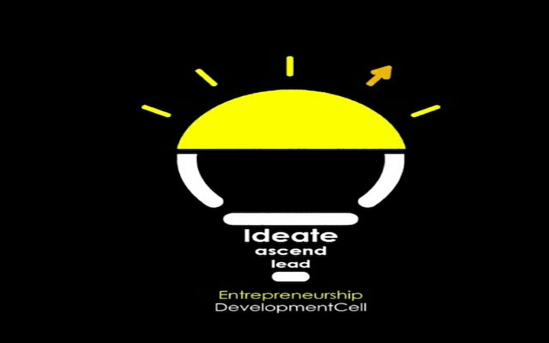

The Entrepreneurship Development cell, Thapar Institute of Engineering and Technology, Patiala has been established with an aim to foster and nurture talented young minds with a vision. With India witnessing the rise of start up culture, we encourage and guide everyone who is bitten by the spirit of entrepreneurship. Imagination dies a dreadful death as we grow, but here, we nurture the imagination of young entrepreneurs by providing a platform to present their seminal ideas. We envision a team of spirited individuals who strive to make resources accessible to students and provide them an easy link to venture capital firms, successful entrepreneurs, executive professionals and corporations so that they can watch their dreams become reality. We believe that entrepreneurship is the key to unlock India's talent and untapped potential and thus we are striving to create, foster and promote entrepreneurship.
To develop the spirit of Entrepreneurship among the students and transform them from job seekers to job creators.
We aim at providing Startups financial help so as to make sure that finance should not be barrier in the path of successful idea through our initiatives such as The Startup Expo
Developing spirit of Entrepreneurship so as to develop an attitude and approach to thinking that actively seeks out change, rather than waiting to adapt to change.
Proving student with Internships so as to develop practical skills and helping startups to grow by helping them to choose the best interns.